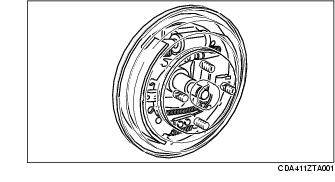

Rear brake (drum) construction
• A leading/trailing type rear drum brake, with a 203 mm {7.99 in} drum inner diameter and 19.05 mm {0.75 in} wheel cylinder inner diameter, has been adopted.
• Braking stability is ensured by use of 36 mm {1.42 in} width linings.
• An auto-adjusting function that constantly maintains the clearance between the brake drum and shoes has been adopted.
